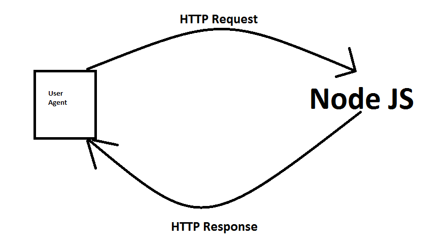

MEAN
A full stack javascript framework consists of the following:
- Monggo
- Express Framework
- Angular JS
- Node JS
What is Node JS
Node JS is a server side javascript environment. It is event drivent meaning that when an event occurs you can handle it.To start developing you could go to the Node JS Site and download and install Node JS.
npm is the package manager for javascript, and npm starts your dependencies file in Node JS, in which to create a project in Node JS you must first type npm init in the CMD to create a node js file
Why is Node js a server side javascript environment

The image above shows how Node JS handles request, it is a server side javascript environment in a way that it is javascript in the server side meaning that the code in the serverside is made up of javascript and when a user agent requests an HTTP request from the Node JS server, the Node JS serer would respond with an HTTP response.
Node JS Libraries
Node JS libraries are divided into modules(a module is a standalong JS file) and to include one, you could use: require('[name of the module]');
Node JS Core library - it is consists of predefined modules that a developer can use without having to download the module before requiring it in a Node JS file. One module that is in the core library of Node JS is HTTP and to include HTTP in your file you could do: var http = require('http');
Modules not included in the Core Library - To install modules that are not included in the Core Library you could type npm install [name of module]. An example is the mysql module which is not in the core library of Node JS
Some modules to consider - Node JS also has modules that acts as a framework, an example is the Express framework which is a backend framework which facilitates difficult things(HTTP requests, responds and many more) and it is complimentary with pug(also known as Jade) which is also a Node JS module that is influenced by Haml, what pug does is that it generates html code with its own syntax.
Features of Node JS
Node JS is Asynchrounous - it doesn't block IO
Node JS supports Callback - the concept of call back is like this: do the function then do something else, when you are finish call my attention.
Node JS can chain function calls - an example would be the code : request.on('data',function1). What happens on the code is that when a request 'data' has occured the function1 would would be called.